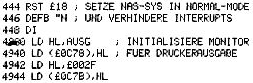
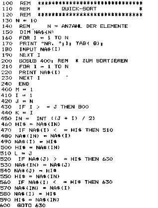

Nascom Journal |
Februar 1982 · Ausgabe 2 |
Umrechnung für die Druckroutine:
| ext.Port | int.Port |
| 10 | 4 |
| 11 | 5 |
| 12 | 6 |
| 13 | 7 |
1 Folgende Zeilen sind im Menueprogramm 2 zu aendern bzw. zu ergaenzen, damit keine 3 Probleme auftreten, wenn unter der MDCR- 4 Routine die Druckroutine aufgerufen wird 5 .

Hier eine Anmerkung zum kürzlich veröffentlichten Analog-Interface (P.Bentz, Heft 11/12-81).
Es gibt eine meiner Meinung nach wesentlich einfachere Lösung, wie sie im Analog Devices AD7581 (8 Kanäle a 8 Bit, DM 50.–) verwirklicht ist: der ADC wandelt ständig der Reihe nach die Spannungen aller Kanäle um und schreibt sie in ein 2-Port-Ram (mit im IC), das nach Bedarf vom Rechner ausgelesen wird (8 I/O-Adressen). Dieser Wert ist nie älter als 0,7ms. Damit spart man sich den ganzen Aufwand für Start Conversion, Warten oder gar Interrupt. Für ganz schnelle Anwendungen natürlich nicht das Richtige.
Ich habe eine I/O-Platine (für ein 6809-System)
damit gebaut, welches sehr zufriedenstellend fuktioniert.
Was beim Heapsort schon zu einer Verbesserung der Effizienz – nämlich Vergleiche über eine größere Distanz – geführt hat, wird beim Quicksort noch konsequenter angewandt. Das mittlere Element eines Feldes dient als Bezugspunkt. Von links und rechts nähert man sich der Mitte und tauscht gegebenenfalls das größere Element auf die rechte Seite. Die Feldhälften werden wiederum geteilt und die Hälften, wie oben beschrieben, behandelt.
Der dazugehörige Algorithmus läßt sich in BASIC nur mit einigen Verrenkungen verwirklichen. Er führt aber zu der schnellsten (mir bekannten) Sortierung eines Feldes. Wegen des größeren Umfangs des Programms lohnt er sich bei kleineren Feldern wohl nicht.
Das hier aufgelistete Programm läßt sich auf Kosten der Lesbarkeit noch um ca. 10% schneller machen, wenn man die Tips aus Teil 2 berücksichtigt. Um 100 Integerzahlen zu sortieren, braucht meine Anlage mit CLD-DOS und dem Microsoft BASIC etwa 15 Sekunden.

| Seite 16 von 32 |
|---|